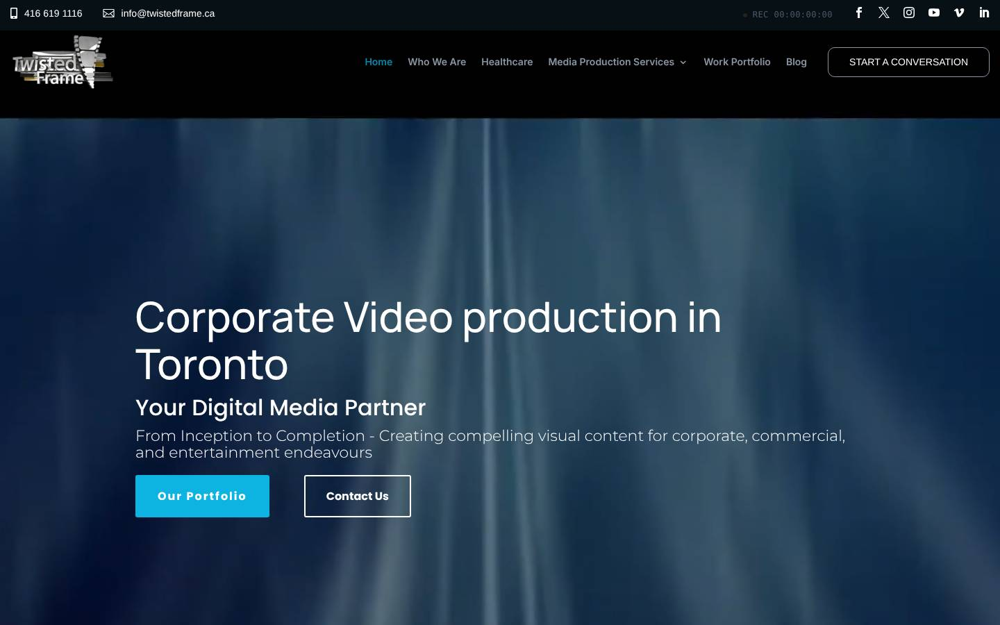
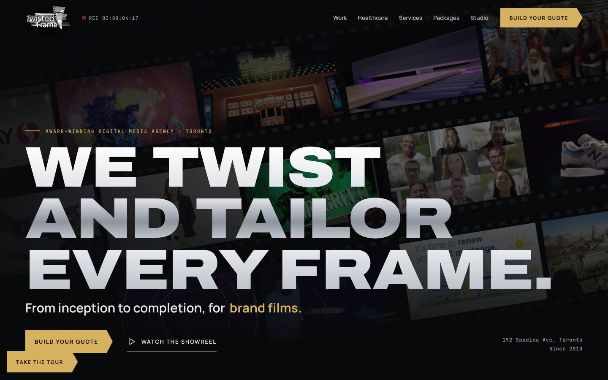
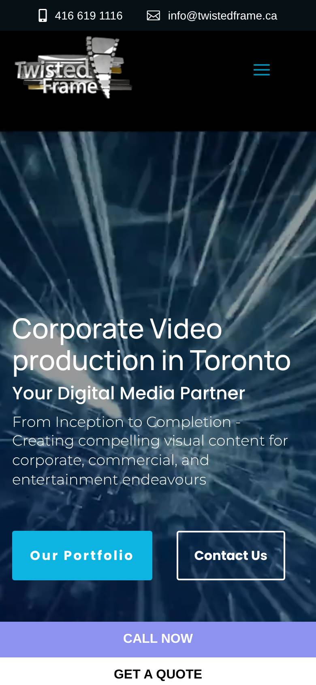
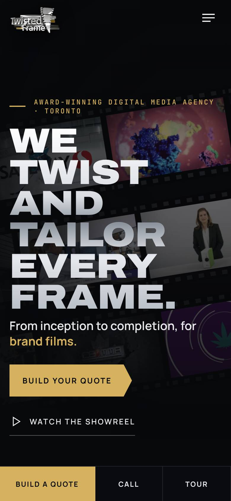
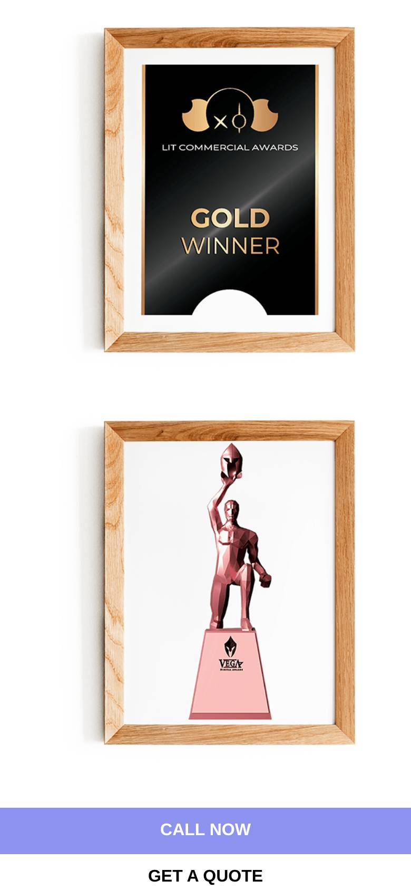
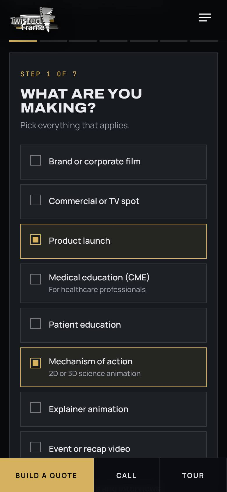

We kept everything that makes Twisted Frame credible: the work, the clients, the awards, the people who vouch for you, and the logo's twisted film strip. Then we rebuilt how it is shown, and added two new ways for the site to bring in business.






Twisted Frame competes in two markets at once: Toronto healthcare and medical video, and Toronto corporate video. Directory listings already name Twisted Frame among Toronto healthcare studios.
| Studio | Market | What stands out | Where Twisted Frame can win |
|---|---|---|---|
| AXS Studio | Healthcare | 3D medical animation, with medical writers and illustrators in-house | Live-action and animation under one roof |
| Hatch Studios | Healthcare | Healthcare video and animation, patient education, training | Award list and pharma client logos up front |
| Reel Vision Studios | Healthcare | Pharmaceutical, medical and dental video | Broader range: VFX, broadcast and interactive |
| VCM Interactive | Healthcare | Full-service, healthcare focus, publishes a pricing page | A self-serve brief and clear packages close the gap |
| F. Learning Studio | Healthcare | Surgery, nurse training and pharma animation | Real surgery and clinical shoots in the portfolio |
| Key West Video | Corporate | Long-established Toronto corporate video producer | Visual polish and VFX that corporate shops rarely show |
| Signature Video Group | Corporate | Strong review volume on Clutch | Healthcare depth no generalist can match |
| Origin Films | Corporate | Highly reviewed Toronto corporate video firm | Animation, motion and 3D in-house |
Sources: Hatch Studios list · F. Learning Studio list · DesignRush: AXS Studio · Clutch: Toronto corporate video · Azuro Digital comparison · VCM Interactive pricing. Checked 2026-11-11.
Was: none.
Now: a three-second film-leader countdown that lands on the logo.
Why: it says "film studio" before a word is read.
Was: blurred stock texture, generic headline.
Now: three strips of their real work, under "We twist and tailor every frame."
Why: the work is the proof. Show it first.
Was: Start a conversation, Call now, Get a quote, Contact us.
Now: Build your quote, everywhere, including a phone bar.
Why: one ask converts better than four.
Was: healthcare hidden on its own page.
Now: Healthcare and Brands side by side on the home page.
Why: each buyer sees their proof in one tap.
Was: 61 thumbnails, each opening a new page.
Now: the best 30, filtered, playing in place.
Why: more people watch, fewer leave.
Was: five long pages repeating the same lines.
Now: one list in their words, with a frame from real work.
Why: easier to scan on a phone.
Was: photos of certificates in wooden frames.
Now: a clean list of all eight.
Why: confident, and readable at any size.
Was: three long quotes in a slider.
Now: the same three, trimmed to the line that sells, all visible.
Why: nothing invented, more of it read.
Was: stock theme, cyan buttons that are not in the logo.
Now: chrome and gold taken from their logo, wide block headlines.
Why: the site finally matches the brand.
Was: 3D chrome bevel that blurs when small.
Now: three flat refreshes of the same twisted strip to choose from.
Why: crisp everywhere, still recognisably theirs.
Seven quick steps: what they are making, existing branding vs a refresh vs a new look, audience and review, deliverables and languages, production, timing and budget. A live brief builds as they go.
Faster quotes, better-qualified leads, and the producer starts the first call already knowing the scope.
Healthcare Launch kit, Always-on monthly content, Footage re-cut and Brand in motion. Each opens the quote tool pre-filled.
Monthly content adds recurring income. Re-cuts sell new work from footage clients already own.
Cut-downs, vertical formats, French versions, captions, scriptwriting, voice-over and brand refresh are asked about up front.
Add-ons get scoped into the first quote instead of being forgotten.